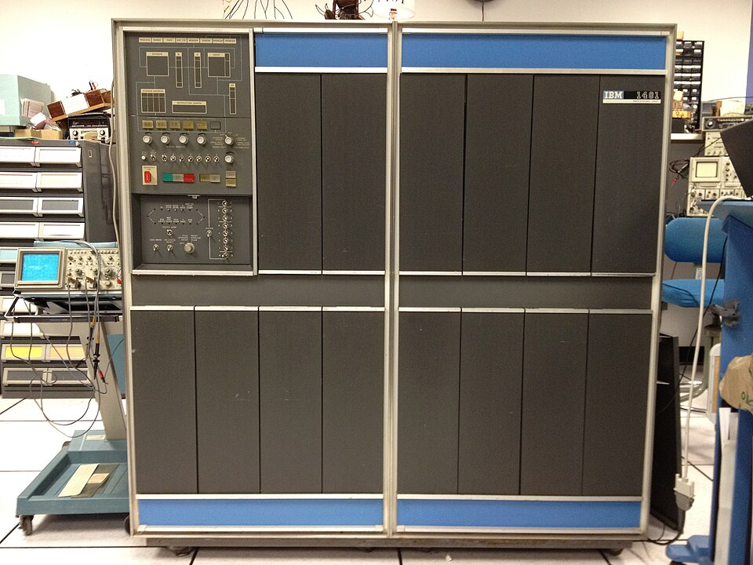
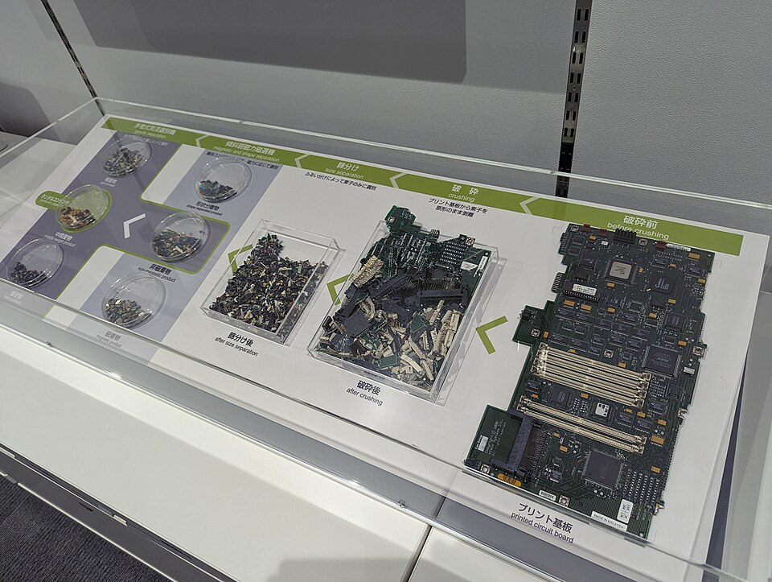

Kapa65
Kapa65
Good morning!
Nur das Schöne wird die Welt retten!
Fjodor Dostojewski
Nicht verzagen, Doc Alvers fragen!
Informatik — Grundkurs 11
Wie Informationssysteme arbeiten
EVA-Prinzip, sicherer Betrieb, Chancen und Gefahren
Nicht verzagen, Doc Alvers fragen!
Kapitel 01
Mehr als ein Computer
Menschen, Technik, Organisation

Nicht verzagen, Doc Alvers fragen!
Wo wir stehen
Zuletzt: Recherche — gezielt suchen, Quellen prüfen, sauber belegen
Heute der Blick aufs Ganze: Systeme, die für viele Menschen zugleich sammeln, recherchieren, produzieren und beschaffen
Beispiele: Schulportal, Kassensystem, Bibliothekskatalog, Online-Shop
Leitfrage: Wie arbeitet ein Informationssystem — und wer trägt die Folgen, wenn es eingeführt wird?
Nicht verzagen, Doc Alvers fragen!
Was ist ein Informationssystem?
Das Zusammenspiel von Menschen, Technik und Organisation, um Informationen zu verarbeiten
Technik allein macht noch kein System — dazu gehören Abläufe, Regeln und Menschen
Deshalb spricht man von einem soziotechnischen System
Beispiel Bibliothek: Katalog und Scanner, Ausleihregeln, Personal und Leser
Nicht verzagen, Doc Alvers fragen!
Das EVA-Prinzip an der Supermarktkasse
| Schritt | was passiert | an der Kasse |
|---|---|---|
| Eingabe | Daten kommen herein | der Scanner liest den Strichcode |
| Verarbeitung | Daten werden verknüpft und berechnet | Preis nachschlagen, Summe bilden |
| Speicherung | Daten werden festgehalten | Verkauf verbuchen, Bestand senken |
| Ausgabe | das Ergebnis geht hinaus | Anzeige und Kassenbon |
EVA heißt Eingabe, Verarbeitung, Ausgabe — mit der Speicherung als viertem Schritt: EVAS
Nicht verzagen, Doc Alvers fragen!
Was Informationssysteme leisten
Sie sammeln Informationen: Messwerte, Bestellungen, Anmeldungen
Sie ermöglichen Recherche: Katalog, Suchfunktion, Auswertung
Sie produzieren Information: Zeugnisse, Rechnungen, Statistiken
Sie organisieren Beschaffung: Nachbestellung, wenn der Bestand sinkt
Überall dasselbe Muster: Eingabe, Verarbeitung, Speicherung, Ausgabe
Nicht verzagen, Doc Alvers fragen!
Garbage in, garbage out
Die Verarbeitung prüft die Bedeutung der Daten nicht
Fehler in der Eingabe wandern unbemerkt bis in die Auswertung
Auch das beste System macht aus falschen Eingaben nur falsche Ergebnisse
Deshalb ist Datenqualität entscheidend: vollständig, richtig, aktuell
Kurz: garbage in, garbage out — Müll rein, Müll raus
Nicht verzagen, Doc Alvers fragen!
Kapitel 02
Verlässlich betreiben
Verfügbarkeit, Schnittstellen, Notfälle
Nicht verzagen, Doc Alvers fragen!
Verfügbarkeit
Verfügbarkeit: der Anteil der Zeit, in dem ein System nutzbar ist — meist in Prozent pro Jahr
99 Prozent klingt viel — und heißt Tage Ausfall im Jahr
Höhere Verfügbarkeit kostet überproportional mehr
Single Point of Failure: eine Stelle, deren Ausfall das ganze System stilllegt — ein einziger Server, eine einzige Leitung
Redundanz, also Ersatzwege, entschärft das
Nicht verzagen, Doc Alvers fragen!
Begriffe aus dem Betrieb
| Begriff | Bedeutung |
|---|---|
| Schnittstelle | legt fest, in welcher Form zwei Systeme Daten austauschen |
| offener Standard | ein Format, das mehrere Programme lesen können |
| Vendor Lock-in | Abhängigkeit von einem Anbieter, weil ein Wechsel zu teuer oder unmöglich ist |
| Skalierbarkeit | die Fähigkeit, mit wachsender Last mitzuwachsen |
| Protokollierung | macht nachvollziehbar, wer wann was getan hat |
Offene Standards und Exportmöglichkeiten beugen dem Lock-in vor
Nicht verzagen, Doc Alvers fragen!
Wenn es doch ausfällt
Ausfälle lassen sich nicht ausschließen — nur vorbereiten
Der Notfall- oder Wiederanlaufplan beschreibt, wie der Betrieb nach einem Ausfall geordnet weitergeht
Er legt Reihenfolge, Zuständigkeit und Erreichbarkeit fest
Er ersetzt die Datensicherung nicht — und er muss geprobt werden, sonst ist er nur Papier
Protokolle helfen beim Aufklären — sind aber selbst schützenswerte Daten
Nicht verzagen, Doc Alvers fragen!
Nicht nur Technik planen
Ein gutes System, das niemand bedienen kann, hilft nicht
Abläufe, Zuständigkeiten und Schulung entscheiden über den Erfolg mit
Häufigster Stolperstein: Die Beschäftigten werden zu spät einbezogen und geschult
Dabei kennen die, die das System nutzen sollen, die Abläufe am besten
Einführung ist immer auch Organisationsarbeit
Nicht verzagen, Doc Alvers fragen!
Kapitel 03
Chancen und Gefahren
Automatisierung, Abhängigkeit, Spaltung
Nicht verzagen, Doc Alvers fragen!
Zwei Seiten derselben Technik
Chancen
Routineaufgaben erledigt die Maschine zuverlässiger
Menschen gewinnen Zeit für Aufgaben, die Urteilsvermögen verlangen
neue Aufgaben in Entwurf, Pflege und Kontrolle
Gefahren
Vernetzung erhöht die Abhängigkeit
ein Ausfall oder Angriff trifft viele Bereiche zugleich
Fehler verschwinden nicht — sie verschieben sich in Entwurf und Pflege
Nicht verzagen, Doc Alvers fragen!
Berufe im Wandel, digitale Spaltung
Automatisierung: Routineanteile übernimmt die Maschine — Entscheidungsanteile bleiben beim Menschen
Tätigkeiten verschieben sich: Neue Aufgaben entstehen, andere fallen weg — nicht nur im Büro
Digitale Spaltung: ungleicher Zugang zu Geräten, Netz und Kompetenzen in der Gesellschaft
Wer keinen Zugang hat, ist ausgeschlossen — oft fehlt nicht nur Technik, sondern auch Wissen und Sprache
Verwaltung und Bildung müssen das mitdenken
Nicht verzagen, Doc Alvers fragen!
Fortschritt ist nicht gut oder schlecht
Technologischer Fortschritt eröffnet Möglichkeiten und schafft zugleich neue Risiken
Gesichtserkennung findet Vermisste — und kann Menschen überwachen
Deshalb ist die Bewertung eine gesellschaftliche Aufgabe
Folgenabschätzung fragt vorher: Wer trägt die Nachteile, wenn das System so eingeführt wird?
Diese Frage gehört an den Anfang, nicht ans Ende
Nicht verzagen, Doc Alvers fragen!
Kapitel 04
Fortschritt und Umwelt
Was Rechenzentren und Geräte kosten

Nicht verzagen, Doc Alvers fragen!
Die Umweltseite
Rechenzentren brauchen Strom rund um die Uhr — für die Rechner und für die Kühlung
Weltweit verbrauchten sie 2024 etwa 1,5 Prozent des Stroms (Internationale Energieagentur)
Bei Smartphone und Laptop entsteht der größte Teil der Treibhausgase schon bei der Herstellung
Deshalb hilft vor allem: Geräte länger nutzen, reparieren, weitergeben
Elektroschrott enthält Wertstoffe und Schadstoffe — er gehört ins Recycling
Nicht verzagen, Doc Alvers fragen!
Stoff für die Debatte
Pro Fortschritt
digitale Abläufe sparen Papier und Wege
Videokonferenz statt Dienstreise
Sensoren und Steuerung sparen Energie beim Heizen und im Verkehr
Kontra: Nachhaltigkeit
Strom- und Kühlbedarf der Rechenzentren
Rohstoffe und Herstellung der Geräte, kurze Nutzungsdauer
Rebound: Was effizienter wird, wird oft auch mehr genutzt
Nicht verzagen, Doc Alvers fragen!
Ein Informationssystem ist mehr als Technik: Menschen, Abläufe und Rechner arbeiten nach dem EVA-Prinzip zusammen — seine Chancen und Gefahren wägt man ab, bevor man es einführt.
Merksatz
Nicht verzagen, Doc Alvers fragen!
Fun Facts
Die IBM 1401 von 1959 brachte die Datenverarbeitung in die Büros — gebaut wurden mehr als 10 000 Stück
Der erste Strichcode an einer Supermarktkasse wurde 1974 gescannt: eine Packung Kaugummi in Ohio
„Fünf Neunen“, also 99,999 Prozent Verfügbarkeit, erlauben nur gut 5 Minuten Ausfall im Jahr:
In Stockholm heizt die Abwärme von Rechenzentren über das Fernwärmenetz Wohnungen
Nicht verzagen, Doc Alvers fragen!
Eure Aufgabe
EVA-Schaubild: Zeichnet für ein System eurer Wahl — Schulportal, Online-Shop, Bibliothek — Eingabe, Verarbeitung, Speicherung, Ausgabe
Markiert darin einen Single Point of Failure und schlagt einen Ersatzweg vor
Pro-Kontra-Debatte: Fortschritt oder Nachhaltigkeit? — mit Argumenten aus einem aktuellen Zeitungsartikel
Jede Seite beantwortet: Wer trägt die Nachteile?
Zum Schluss: Aufgaben (20) auf der Planseite — Lösung pro Aufgabe zum Aufklappen
Nicht verzagen, Doc Alvers fragen!